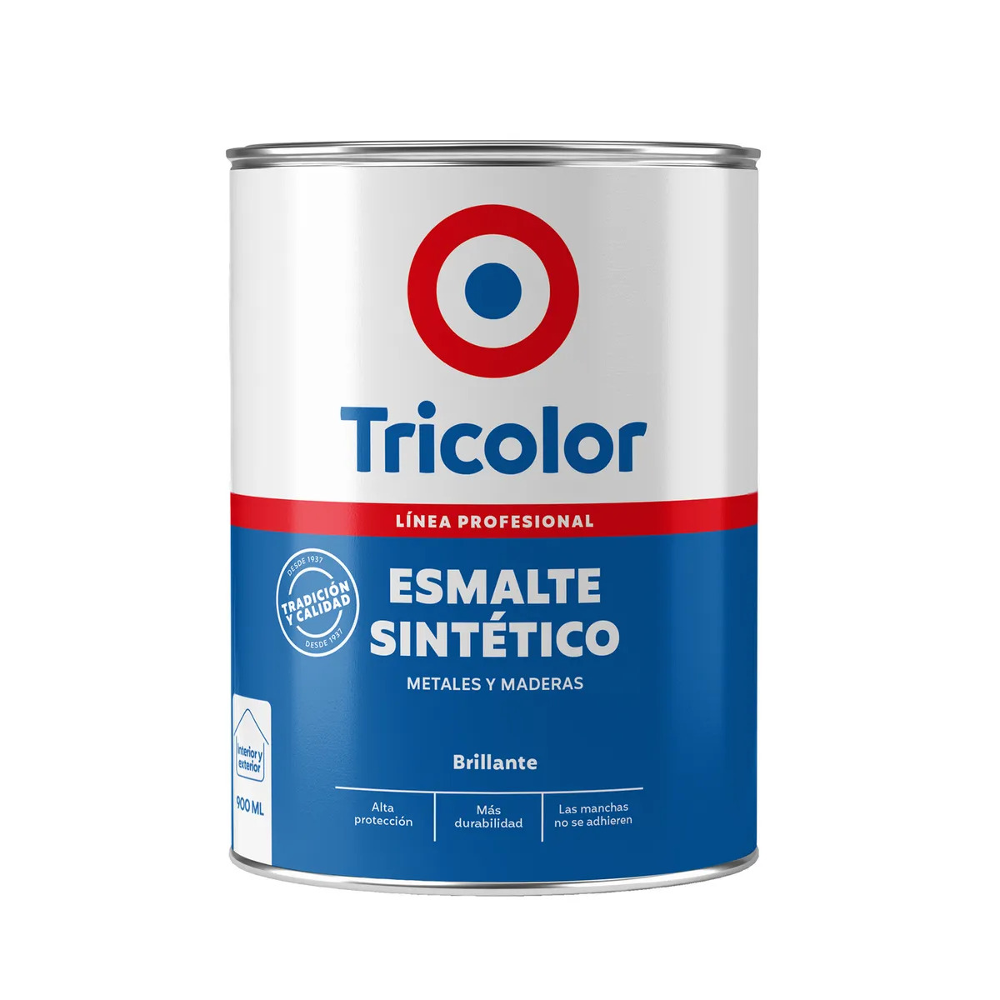

Esmalte sintético

Recubrimiento que crea una película decorativa y protectora sobre superficies compatibles. Se utiliza en puertas, rejas y muebles, respetando la preparación, imprimación y ventilación recomendadas.